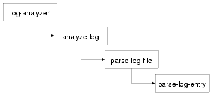

One of Lisp's great features is its condition system. It serves a similar purpose to the exception handling systems in Java, Python, and C++ but is more flexible. In fact, its flexibility extends beyond error handling--conditions are more general than exceptions in that a condition can represent any occurrence during a program's execution that may be of interest to code at different levels on the call stack. For example, in the section "Other Uses for Conditions," you'll see that conditions can be used to emit warnings without disrupting execution of the code that emits the warning while allowing code higher on the call stack to control whether the warning message is printed. For the time being, however, I'll focus on error handling.
The condition system is more flexible than exception systems because instead of providing a two-part division between the code that signals an error1 and the code that handles it,2 the condition system splits the responsibilities into three parts--signaling a condition, handling it, and restarting. In this chapter, I'll describe how you could use conditions in part of a hypothetical application for analyzing log files. You'll see how you could use the condition system to allow a low-level function to detect a problem while parsing a log file and signal an error, to allow mid-level code to provide several possible ways of recovering from such an error, and to allow code at the highest level of the application to define a policy for choosing which recovery strategy to use.
To start, I'll introduce some terminology: errors, as I'll use the term, are the consequences of Murphy's law. If something can go wrong, it will: a file that your program needs to read will be missing, a disk that you need to write to will be full, the server you're talking to will crash, or the network will go down. If any of these things happen, it may stop a piece of code from doing what you want. But there's no bug; there's no place in the code that you can fix to make the nonexistent file exist or the disk not be full. However, if the rest of the program is depending on the actions that were going to be taken, then you'd better deal with the error somehow or you will have introduced a bug. So, errors aren't caused by bugs, but neglecting to handle an error is almost certainly a bug.
So, what does it mean to handle an error? In a well-written program, each function is a black box hiding its inner workings. Programs are then built out of layers of functions: high-level functions are built on top of the lower-level functions, and so on. This hierarchy of functionality manifests itself at runtime in the form of the call stack: if high calls medium, which calls low, when the flow of control is in low, it's also still in medium and high, that is, they're still on the call stack.
Because each function is a black box, function boundaries are an excellent place to deal with errors. Each function--low, for example--has a job to do. Its direct caller--medium in this case--is counting on it to do its job. However, an error that prevents it from doing its job puts all its callers at risk: medium called low because it needs the work done that low does; if that work doesn't get done, medium is in trouble. But this means that medium's caller, high, is also in trouble--and so on up the call stack to the very top of the program. On the other hand, because each function is a black box, if any of the functions in the call stack can somehow do their job despite underlying errors, then none of the functions above it needs to know there was a problem--all those functions care about is that the function they called somehow did the work expected of it.
In most languages, errors are handled by returning from a failing function and giving the caller the choice of either recovering or failing itself. Some languages use the normal function return mechanism, while languages with exceptions return control by throwing or raising an exception. Exceptions are a vast improvement over using normal function returns, but both schemes suffer from a common flaw: while searching for a function that can recover, the stack unwinds, which means code that might recover has to do so without the context of what the lower-level code was trying to do when the error actually occurred.
Consider the hypothetical call chain of high, medium, low. If low fails and medium can't recover, the ball is in high's court. For high to handle the error, it must either do its job without any help from medium or somehow change things so calling medium will work and call it again. The first option is theoretically clean but implies a lot of extra code--a whole extra implementation of whatever it was medium was supposed to do. And the further the stack unwinds, the more work that needs to be redone. The second option--patching things up and retrying--is tricky; for high to be able to change the state of the world so a second call into medium won't end up causing an error in low, it'd need an unseemly knowledge of the inner workings of both medium and low, contrary to the notion that each function is a black box.
Common Lisp's error handling system gives you a way out of this conundrum by letting you separate the code that actually recovers from an error from the code that decides how to recover. Thus, you can put recovery code in low-level functions without committing to actually using any particular recovery strategy, leaving that decision to code in high-level functions.
To get a sense of how this works, let's suppose you're writing an application that reads some sort of textual log file, such as a Web server's log. Somewhere in your application you'll have a function to parse the individual log entries. Let's assume you'll write a function, parse-log-entry, that will be passed a string containing the text of a single log entry and that is supposed to return a log-entry object representing the entry. This function will be called from a function, parse-log-file, that reads a complete log file and returns a list of objects representing all the entries in the file.
To keep things simple, the parse-log-entry function will not be required to parse incorrectly formatted entries. It will, however, be able to detect when its input is malformed. But what should it do when it detects bad input? In C you'd return a special value to indicate there was a problem. In Java or Python you'd throw or raise an exception. In Common Lisp, you signal a condition.
A condition is an object whose class indicates the general nature of the condition and whose instance data carries information about the details of the particular circumstances that lead to the condition being signaled.3 In this hypothetical log analysis program, you might define a condition class, malformed-log-entry-error, that parse-log-entry will signal if it's given data it can't parse.
Condition classes are defined with the DEFINE-CONDITION macro, which works essentially the same as DEFCLASS except that the default superclass of classes defined with DEFINE-CONDITION is CONDITION rather than STANDARD-OBJECT. Slots are specified in the same way, and condition classes can singly and multiply inherit from other classes that descend from CONDITION. But for historical reasons, condition classes aren't required to be instances of STANDARD-OBJECT, so some of the functions you use with DEFCLASSed classes aren't required to work with conditions. In particular, a condition's slots can't be accessed using SLOT-VALUE; you must specify either a :reader option or an :accessor option for any slot whose value you intend to use. Likewise, new condition objects are created with MAKE-CONDITION rather than MAKE-INSTANCE. MAKE-CONDITION initializes the slots of the new condition based on the :initargs it's passed, but there's no way to further customize a condition's initialization, equivalent to INITIALIZE-INSTANCE.4
When using the condition system for error handling, you should define your conditions as subclasses of ERROR, a subclass of CONDITION. Thus, you might define malformed-log-entry-error, with a slot to hold the argument that was passed to parse-log-entry, like this:
(define-condition malformed-log-entry-error (error) ((text :initarg :text :reader text)))
In parse-log-entry you'll signal a malformed-log-entry-error if you can't parse the log entry. You signal errors with the function ERROR, which calls the lower-level function SIGNAL and drops into the debugger if the condition isn't handled. You can call ERROR two ways: you can pass it an already instantiated condition object, or you can pass it the name of the condition class and any initargs needed to construct a new condition, and it will instantiate the condition for you. The former is occasionally useful for resignaling an existing condition object, but the latter is more concise. Thus, you could write parse-log-entry like this, eliding the details of actually parsing a log entry:
(defun parse-log-entry (text)
(if (well-formed-log-entry-p text)
(make-instance 'log-entry ...)
(error 'malformed-log-entry-error :text text)))
What happens when the error is signaled depends on the code above parse-log-entry on the call stack. To avoid landing in the debugger, you must establish a condition handler in one of the functions leading to the call to parse-log-entry. When a condition is signaled, the signaling machinery looks through a list of active condition handlers, looking for a handler that can handle the condition being signaled based on the condition's class. Each condition handler consists of a type specifier indicating what types of conditions it can handle and a function that takes a single argument, the condition. At any given moment there can be many active condition handlers established at various levels of the call stack. When a condition is signaled, the signaling machinery finds the most recently established handler whose type specifier is compatible with the condition being signaled and calls its function, passing it the condition object.
The handler function can then choose whether to handle the condition. The function can decline to handle the condition by simply returning normally, in which case control returns to the SIGNAL function, which will search for the next most recently established handler with a compatible type specifier. To handle the condition, the function must transfer control out of SIGNAL via a nonlocal exit. In the next section, you'll see how a handler can choose where to transfer control. However, many condition handlers simply want to unwind the stack to the place where they were established and then run some code. The macro HANDLER-CASE establishes this kind of condition handler. The basic form of a HANDLER-CASE is as follows:
(handler-case expression error-clause*)
where each error-clause is of the following form:
(condition-type ([var]) code)
If the expression returns normally, then its value is returned by the HANDLER-CASE. The body of a HANDLER-CASE must be a single expression; you can use PROGN to combine several expressions into a single form. If, however, the expression signals a condition that's an instance of any of the condition-types specified in any error-clause, then the code in the appropriate error clause is executed and its value returned by the HANDLER-CASE. The var, if included, is the name of the variable that will hold the condition object when the handler code is executed. If the code doesn't need to access the condition object, you can omit the variable name.
For instance, one way to handle the malformed-log-entry-error signaled by parse-log-entry in its caller, parse-log-file, would be to skip the malformed entry. In the following function, the HANDLER-CASE expression will either return the value returned by parse-log-entry or return NIL if a malformed-log-entry-error is signaled. (The it in the LOOP clause collect it is another LOOP keyword, which refers to the value of the most recently evaluated conditional test, in this case the value of entry.)
(defun parse-log-file (file)
(with-open-file (in file :direction :input)
(loop for text = (read-line in nil nil) while text
for entry = (handler-case (parse-log-entry text)
(malformed-log-entry-error () nil))
when entry collect it)))
When parse-log-entry returns normally, its value will be assigned to entry and collected by the LOOP. But if parse-log-entry signals a malformed-log-entry-error, then the error clause will return NIL, which won't be collected.
This version of parse-log-file has one serious deficiency: it's doing too much. As its name suggests, the job of parse-log-file is to parse the file and produce a list of log-entry objects; if it can't, it's not its place to decide what to do instead. What if you want to use parse-log-file in an application that wants to tell the user that the log file is corrupted or one that wants to recover from malformed entries by fixing them up and re-parsing them? Or maybe an application is fine with skipping them but only until a certain number of corrupted entries have been seen.
You could try to fix this problem by moving the HANDLER-CASE to a higher-level function. However, then you'd have no way to implement the current policy of skipping individual entries--when the error was signaled, the stack would be unwound all the way to the higher-level function, abandoning the parsing of the log file altogether. What you want is a way to provide the current recovery strategy without requiring that it always be used.
The condition system lets you do this by splitting the error handling code into two parts. You place code that actually recovers from errors into restarts, and condition handlers can then handle a condition by invoking an appropriate restart. You can place restart code in mid- or low-level functions, such as parse-log-file or parse-log-entry, while moving the condition handlers into the upper levels of the application.
To change parse-log-file so it establishes a restart instead of a condition handler, you can change the HANDLER-CASE to a RESTART-CASE. The form of RESTART-CASE is quite similar to a HANDLER-CASE except the names of restarts are just names, not necessarily the names of condition types. In general, a restart name should describe the action the restart takes. In parse-log-file, you can call the restart skip-log-entry since that's what it does. The new version will look like this:
(defun parse-log-file (file)
(with-open-file (in file :direction :input)
(loop for text = (read-line in nil nil) while text
for entry = (restart-case (parse-log-entry text)
(skip-log-entry () nil))
when entry collect it)))
If you invoke this version of parse-log-file on a log file containing corrupted entries, it won't handle the error directly; you'll end up in the debugger. However, there among the various restarts presented by the debugger will be one called skip-log-entry, which, if you choose it, will cause parse-log-file to continue on its way as before. To avoid ending up in the debugger, you can establish a condition handler that invokes the skip-log-entry restart automatically.
The advantage of establishing a restart rather than having parse-log-file handle the error directly is it makes parse-log-file usable in more situations. The higher-level code that invokes parse-log-file doesn't have to invoke the skip-log-entry restart. It can choose to handle the error at a higher level. Or, as I'll show in the next section, you can add restarts to parse-log-entry to provide other recovery strategies, and then condition handlers can choose which strategy they want to use.
But before I can talk about that, you need to see how to set up a condition handler that will invoke the skip-log-entry restart. You can set up the handler anywhere in the chain of calls leading to parse-log-file. This may be quite high up in your application, not necessarily in parse-log-file's direct caller. For instance, suppose the main entry point to your application is a function, log-analyzer, that finds a bunch of logs and analyzes them with the function analyze-log, which eventually leads to a call to parse-log-file. Without any error handling, it might look like this:
(defun log-analyzer ()
(dolist (log (find-all-logs))
(analyze-log log)))
The job of analyze-log is to call, directly or indirectly, parse-log-file and then do something with the list of log entries returned. An extremely simple version might look like this:
(defun analyze-log (log)
(dolist (entry (parse-log-file log))
(analyze-entry entry)))
where the function analyze-entry is presumably responsible for extracting whatever information you care about from each log entry and stashing it away somewhere.
Thus, the path from the top-level function, log-analyzer, to parse-log-entry, which actually signals an error, is as follows:

Assuming you always want to skip malformed log entries, you could change this function to establish a condition handler that invokes the skip-log-entry restart for you. However, you can't use HANDLER-CASE to establish the condition handler because then the stack would be unwound to the function where the HANDLER-CASE appears. Instead, you need to use the lower-level macro HANDLER-BIND. The basic form of HANDLER-BIND is as follows:
(handler-bind (binding*) form*)
where each binding is a list of a condition type and a handler function of one argument. After the handler bindings, the body of the HANDLER-BIND can contain any number of forms. Unlike the handler code in HANDLER-CASE, the handler code must be a function object, and it must accept a single argument. A more important difference between HANDLER-BIND and HANDLER-CASE is that the handler function bound by HANDLER-BIND will be run without unwinding the stack--the flow of control will still be in the call to parse-log-entry when this function is called. The call to INVOKE-RESTART will find and invoke the most recently bound restart with the given name. So you can add a handler to log-analyzer that will invoke the skip-log-entry restart established in parse-log-file like this:5
(defun log-analyzer ()
(handler-bind ((malformed-log-entry-error
#'(lambda (c)
(invoke-restart 'skip-log-entry))))
(dolist (log (find-all-logs))
(analyze-log log))))
In this HANDLER-BIND, the handler function is an anonymous function that invokes the restart skip-log-entry. You could also define a named function that does the same thing and bind it instead. In fact, a common practice when defining a restart is to define a function, with the same name and taking a single argument, the condition, that invokes the eponymous restart. Such functions are called restart functions. You could define a restart function for skip-log-entry like this:
(defun skip-log-entry (c) (invoke-restart 'skip-log-entry))
Then you could change the definition of log-analyzer to this:
(defun log-analyzer ()
(handler-bind ((malformed-log-entry-error #'skip-log-entry))
(dolist (log (find-all-logs))
(analyze-log log))))
As written, the skip-log-entry restart function assumes that a skip-log-entry restart has been established. If a malformed-log-entry-error is ever signaled by code called from log-analyzer without a skip-log-entry having been established, the call to INVOKE-RESTART will signal a CONTROL-ERROR when it fails to find the skip-log-entry restart. If you want to allow for the possibility that a malformed-log-entry-error might be signaled from code that doesn't have a skip-log-entry restart established, you could change the skip-log-entry function to this:
(defun skip-log-entry (c)
(let ((restart (find-restart 'skip-log-entry)))
(when restart (invoke-restart restart))))
FIND-RESTART looks for a restart with a given name and returns an object representing the restart if the restart is found and NIL if not. You can invoke the restart by passing the restart object to INVOKE-RESTART. Thus, when skip-log-entry is bound with HANDLER-BIND, it will handle the condition by invoking the skip-log-entry restart if one is available and otherwise will return normally, giving other condition handlers, bound higher on the stack, a chance to handle the condition.
Since restarts must be explicitly invoked to have any effect, you can define multiple restarts, each providing a different recovery strategy. As I mentioned earlier, not all log-parsing applications will necessarily want to skip malformed entries. Some applications might want parse-log-file to include a special kind of object representing malformed entries in the list of log-entry objects; other applications may have some way to repair a malformed entry and may want a way to pass the fixed entry back to parse-log-entry.
To allow more complex recovery protocols, restarts can take arbitrary arguments, which are passed in the call to INVOKE-RESTART. You can provide support for both the recovery strategies I just mentioned by adding two restarts to parse-log-entry, each of which takes a single argument. One simply returns the value it's passed as the return value of parse-log-entry, while the other tries to parse its argument in the place of the original log entry.
(defun parse-log-entry (text)
(if (well-formed-log-entry-p text)
(make-instance 'log-entry ...)
(restart-case (error 'malformed-log-entry-error :text text)
(use-value (value) value)
(reparse-entry (fixed-text) (parse-log-entry fixed-text)))))
The name USE-VALUE is a standard name for this kind of restart. Common Lisp defines a restart function for USE-VALUE similar to the skip-log-entry function you just defined. So, if you wanted to change the policy on malformed entries to one that created an instance of malformed-log-entry, you could change log-analyzer to this (assuming the existence of a malformed-log-entry class with a :text initarg):
(defun log-analyzer ()
(handler-bind ((malformed-log-entry-error
#'(lambda (c)
(use-value
(make-instance 'malformed-log-entry :text (text c))))))
(dolist (log (find-all-logs))
(analyze-log log))))
You could also have put these new restarts into parse-log-file instead of parse-log-entry. However, you generally want to put restarts in the lowest-level code possible. It wouldn't, though, be appropriate to move the skip-log-entry restart into parse-log-entry since that would cause parse-log-entry to sometimes return normally with NIL, the very thing you started out trying to avoid. And it'd be an equally bad idea to remove the skip-log-entry restart on the theory that the condition handler could get the same effect by invoking the use-value restart with NIL as the argument; that would require the condition handler to have intimate knowledge of how the parse-log-file works. As it stands, the skip-log-entry is a properly abstracted part of the log-parsing API.
While conditions are mainly used for error handling, they can be used for other purposes--you can use conditions, condition handlers, and restarts to build a variety of protocols between low- and high-level code. The key to understanding the potential of conditions is to understand that merely signaling a condition has no effect on the flow of control.
The primitive signaling function SIGNAL implements the mechanism of searching for an applicable condition handler and invoking its handler function. The reason a handler can decline to handle a condition by returning normally is because the call to the handler function is just a regular function call--when the handler returns, control passes back to SIGNAL, which then looks for another, less recently bound handler that can handle the condition. If SIGNAL runs out of condition handlers before the condition is handled, it also returns normally.
The ERROR function you've been using calls SIGNAL. If the error is handled by a condition handler that transfers control via HANDLER-CASE or by invoking a restart, then the call to SIGNAL never returns. But if SIGNAL returns, ERROR invokes the debugger by calling the function stored in *DEBUGGER-HOOK*. Thus, a call to ERROR can never return normally; the condition must be handled either by a condition handler or in the debugger.
Another condition signaling function, WARN, provides an example of a different kind of protocol built on the condition system. Like ERROR, WARN calls SIGNAL to signal a condition. But if SIGNAL returns, WARN doesn't invoke the debugger--it prints the condition to *ERROR-OUTPUT* and returns NIL, allowing its caller to proceed. WARN also establishes a restart, MUFFLE-WARNING, around the call to SIGNAL that can be used by a condition handler to make WARN return without printing anything. The restart function MUFFLE-WARNING finds and invokes its eponymous restart, signaling a CONTROL-ERROR if no such restart is available. Of course, a condition signaled with WARN could also be handled in some other way--a condition handler could "promote" a warning to an error by handling it as if it were an error.
For instance, in the log-parsing application, if there were ways a log entry could be slightly malformed but still parsable, you could write parse-log-entry to go ahead and parse the slightly defective entries but to signal a condition with WARN when it did. Then the larger application could choose to let the warning print, to muffle the warning, or to treat the warning like an error, recovering the same way it would from a malformed-log-entry-error.
A third error-signaling function, CERROR, provides yet another protocol. Like ERROR, CERROR will drop you into the debugger if the condition it signals isn't handled. But like WARN, it establishes a restart before it signals the condition. The restart, CONTINUE, causes CERROR to return normally--if the restart is invoked by a condition handler, it will keep you out of the debugger altogether. Otherwise, you can use the restart once you're in the debugger to resume the computation immediately after the call to CERROR. The function CONTINUE finds and invokes the CONTINUE restart if it's available and returns NIL otherwise.
You can also build your own protocols on SIGNAL--whenever low-level code needs to communicate information back up the call stack to higher-level code, the condition mechanism is a reasonable mechanism to use. But for most purposes, one of the standard error or warning protocols should suffice.
You'll use the condition system in future practical chapters, both for regular error handling and, in Chapter 25, to help in handling a tricky corner case of parsing ID3 files. Unfortunately, it's the fate of error handling to always get short shrift in programming texts--proper error handling, or lack thereof, is often the biggest difference between illustrative code and hardened, production-quality code. The trick to writing the latter has more to do with adopting a particularly rigorous way of thinking about software than with the details of any particular programming language constructs. That said, if your goal is to write that kind of software, you'll find the Common Lisp condition system is an excellent tool for writing robust code and one that fits quite nicely into Common Lisp's incremental development style.
In the next chapter I'll give a quick overview of some of the 25 special operators you haven't had a chance to use yet, at least not directly.
1Throws or raises an exception in Java/Python terms
2Catches the exception in Java/Python terms
3In this respect, a condition is a lot like an exception in Java or Python except not all conditions represent an error or exceptional situation.
4In some Common Lisp implementations, conditions are defined as subclasses of STANDARD-OBJECT, in which case SLOT-VALUE, MAKE-INSTANCE, and INITIALIZE-INSTANCE will work, but it's not portable to rely on it.
5The compiler may complain if the parameter is never used. You can silence that warning by adding a declaration (declare (ignore c)) as the first expression in the LAMBDA body.